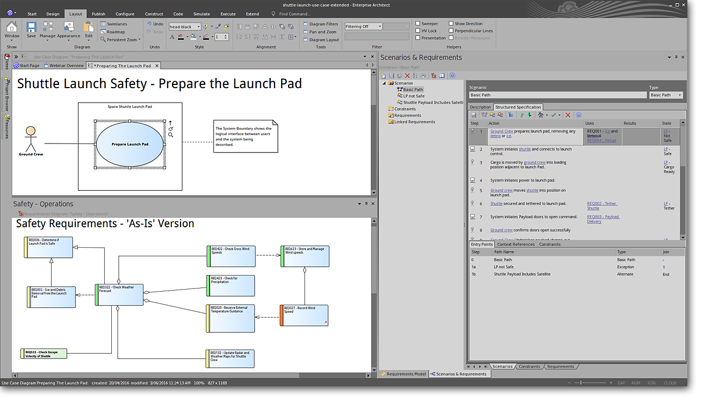
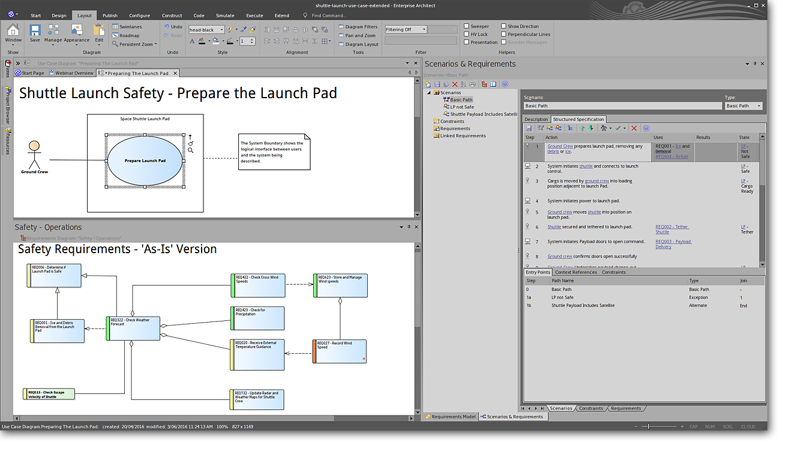
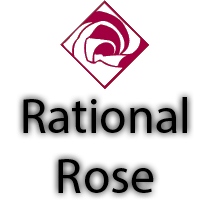
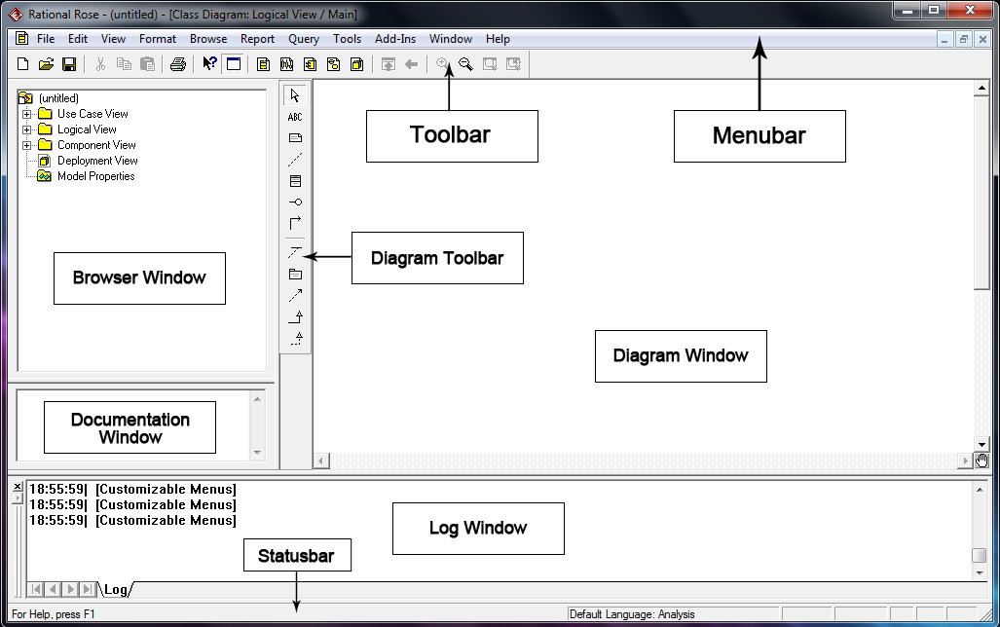

Uppercase Vahendid
-------------------------------------------------
Upper CASE tööriistad on peamiselt keskendunud tarkvaraarenduse elutsükli algfaasidele, sealhulgas nõuete analüüsile,
süsteemi modelleerimisele ja kõrgetasemelisele disainile. Need aitavad luua süsteeminõuete ja kujunduste visuaalseid esitusi.
Upper CASE tööriistade ühised funktsioonid on järgmised:
Nõuete modelleerimine: tööriistad tarkvaranõuete hõivamiseks, korraldamiseks ja visualiseerimiseks,
kasutades selliseid tehnikaid nagu kasutusjuhtude diagrammid ja olemi-suhete diagrammid.
Diagrammi koostamine: tugi erinevate diagrammide, sealhulgas andmevoo diagrammide,
olemi-seoste diagrammide ja olekute ülemineku diagrammide koostamiseks.
Modelleerimiskeeled: U-CASE tööriistad toetavad sageli modelleerimiskeeli,
nagu ühtne modelleerimiskeel (UML) süsteemi modelleerimiseks ja kujundamiseks.
-------------------------------------------------
Milliseid vahendeid olen ise kasutanud?
Microsoft Powerpoint
Sparx Systems Enterprise Architect on visuaalse modelleerimise ja disaini tööriist, mis põhineb OMG UML-il.
Platvorm toetab: tarkvarasüsteemide projekteerimist ja ehitamist; äriprotsesside modelleerimine; ja tööstuspõhiste domeenide modelleerimine.
 

Näide lowercase vahendist mida kasutanud ei ole
-------------------------------------------------
Sparx Systems Enterprise Architect
Sparx Systems Enterprise Architect on visuaalse modelleerimise ja disaini tööriist, mis põhineb OMG UML-il.
Platvorm toetab: tarkvarasüsteemide projekteerimist ja ehitamist; äriprotsesside modelleerimine; ja tööstuspõhiste domeenide modelleerimine.
Rational Rose
Rational Rose oli Unified Modeling Language arenduskeskkond.See integreerub Microsoft Visual Studio .NET ja Rational Application Developeriga.
Selle tarkvara kirjutas varem Rational Rosei tootnud IBMi Rational Software osakond.

